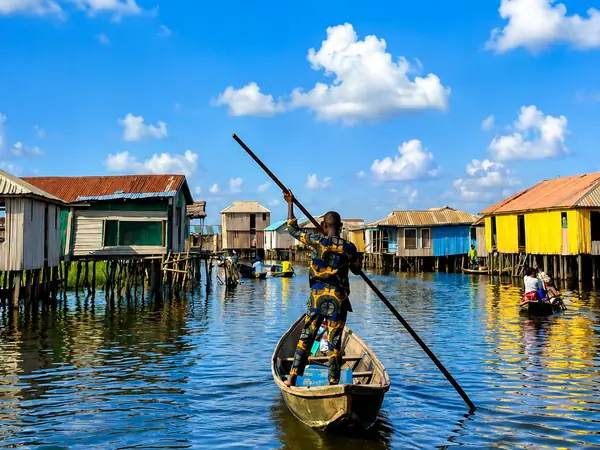
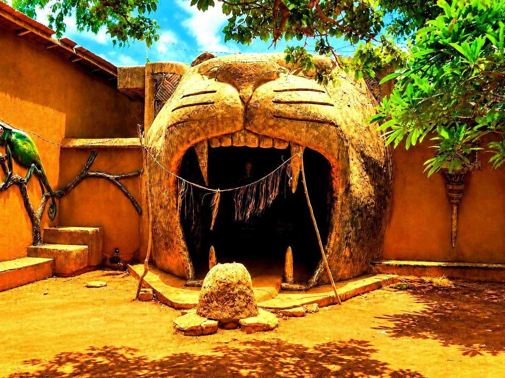
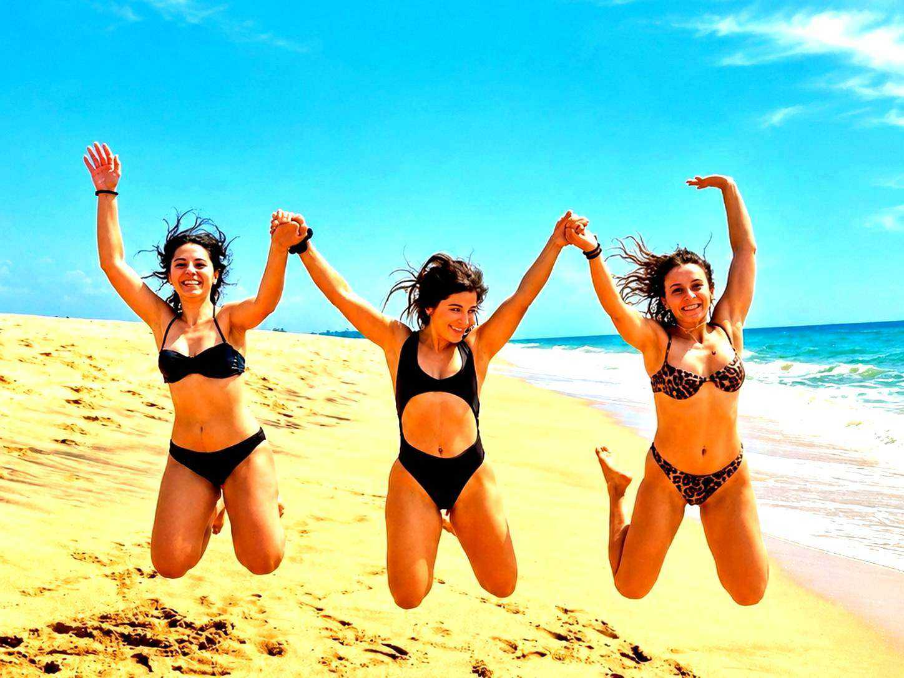
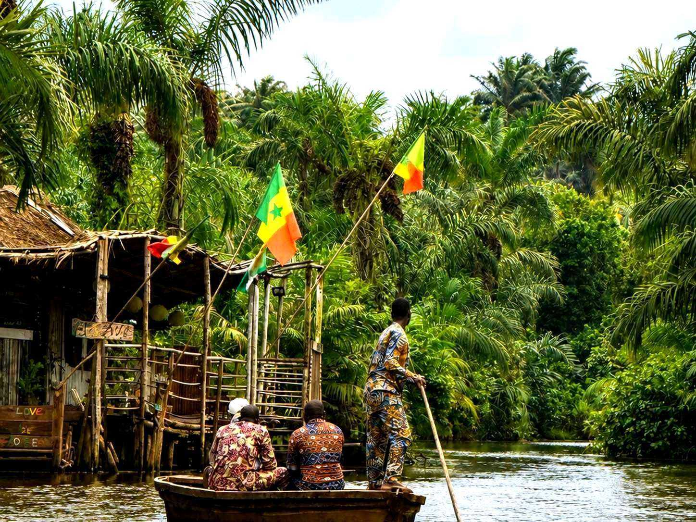
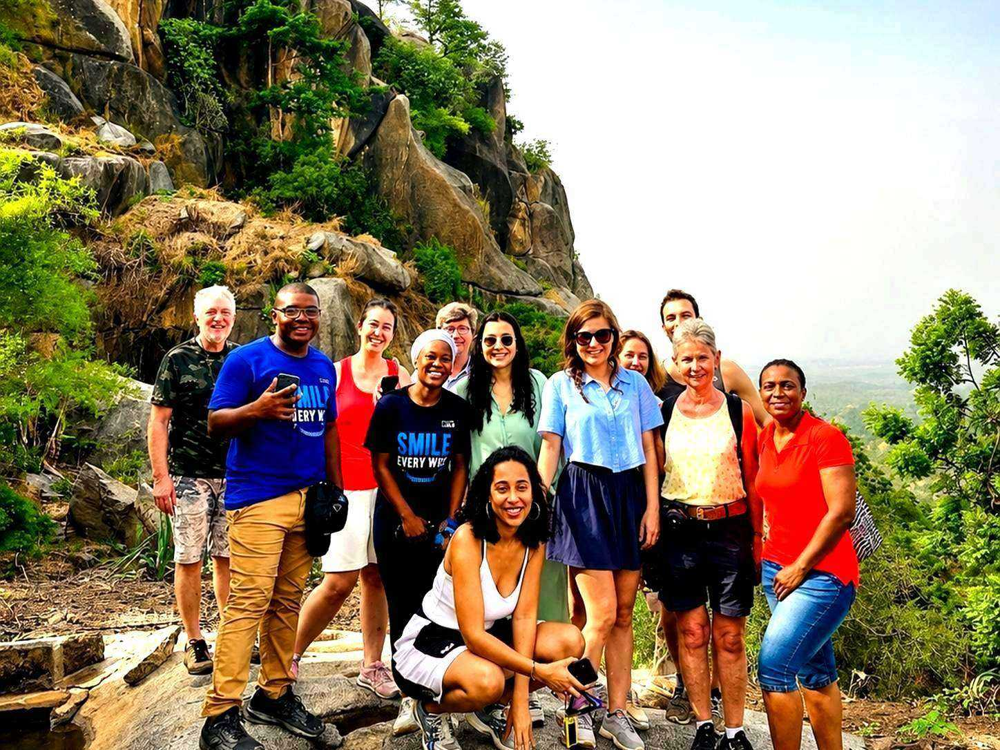
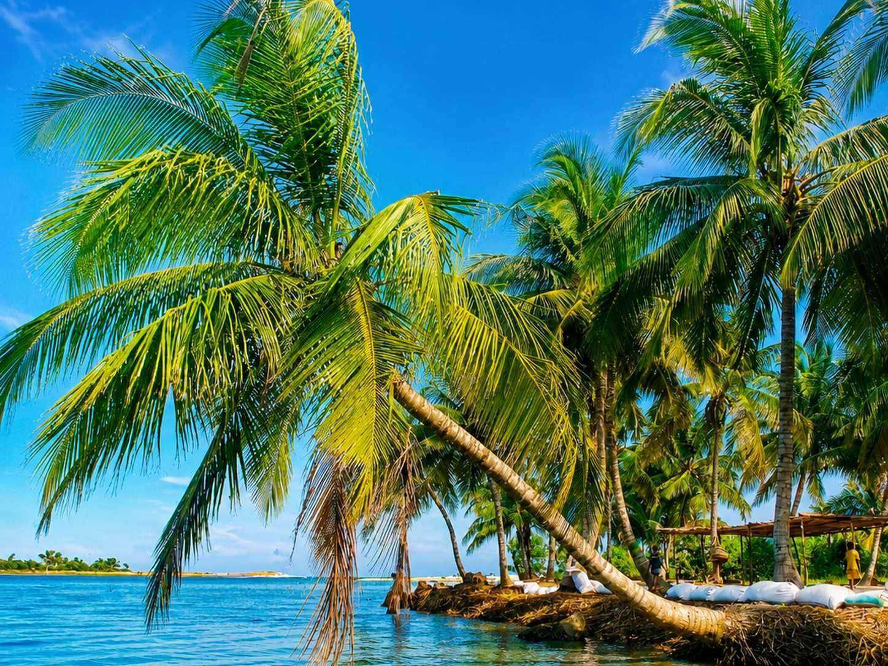
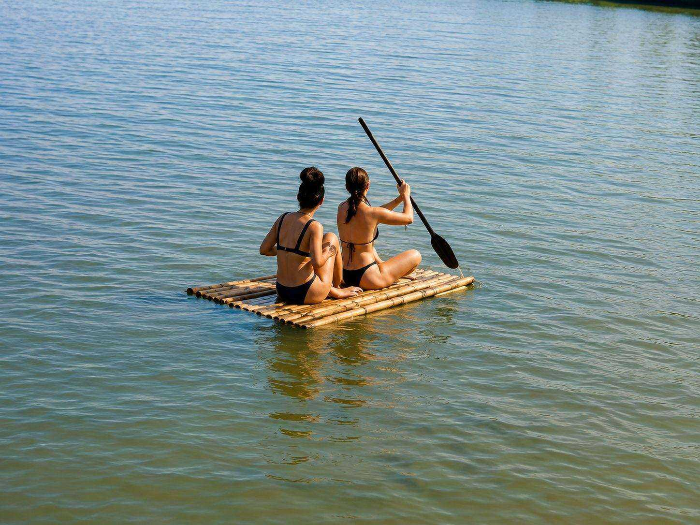
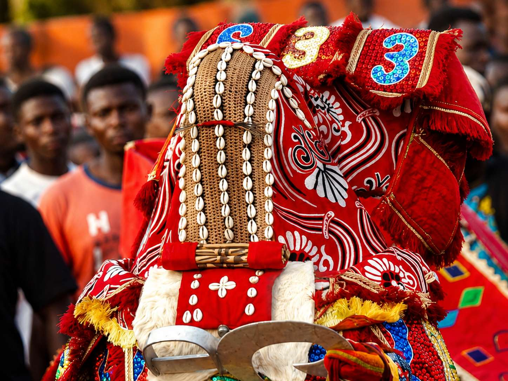
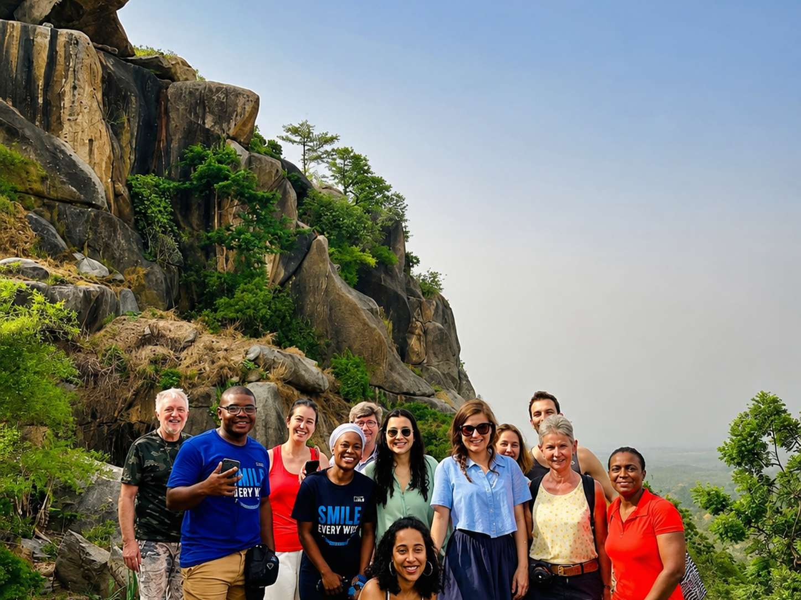

Discover Authentic Bénin
Unique experiences, passionate local guides, and unforgettable journeys across West Africa's most extraordinary country.
Bénin's Most Extraordinary Destinations
Each corner of Bénin holds a story that has shaped Africa and the world. Let us take you there — with expert local guides, private vehicles, and experiences money can't easily find on its own.

Ganvié
A stilt village of 30,000 people, floating entirely on Lake Nokoué for four centuries.

Abomey

Ouidah

Vodun Culture

Cotonou

Natitingou
Pendjari

Adjarra

Dassa-Zoumè

Porto-Novo

Grand-Popo

Gogotinkpon
View All 12 →
"Bénin does not perform for visitors. It simply lives — and invites you, quietly, to witness."
— Visit Bénin ToursExpertly Crafted Bénin Journeys
From single-day escapes to grand two-week expeditions, every itinerary is private and built around you.
Ganvié & Ouidah Discovery
Africa's Venice, the Slave Route, and the living heart of Vodun — the definitive southern Bénin circuit.
Pendjari Wildlife Safari
Lions, elephants and 300+ bird species in West Africa's finest national park.
Grand Bénin Expedition
Every region, every highlight — from lake villages to royal palaces to northern safari.
The Name Travellers Trust in Bénin
Genuinely Private Tours
No fixed group departures, no rushed stops. Every itinerary is designed exclusively around you.
Local, Certified Guides
Every guide is Beninese, certified, and personally selected for deep knowledge and genuine passion.
Safe & Comfortable
Air-conditioned vehicles, vetted accommodations, and support available 24/7 throughout your journey.
Real, Respectful Access
Authentic Vodun ceremonies, private palace visits, and communities who share their culture with genuine pride.
What Our Guests Say
Real, verified reviews from our official Google and TripAdvisor listings — see them directly at the source.
Trusted by Travellers Worldwide
Stories & Travel Guides
Ganvié: The Complete Guide to Visiting Africa's Venice
Best time to go, what a pirogue tour involves, and how to visit respectfully.
Read More →
Understanding Vodun: Bénin's Living Spiritual Heritage
An honest introduction to Vodun as it's actually practised in its birthplace.
Read More →
10 Things to Know Before Traveling to Bénin
Visas, currency, safety, and how to get around.
Read More →Ready to Discover Bénin?
Contact us today and we'll craft your perfect private tour. WhatsApp replies within 2 hours.